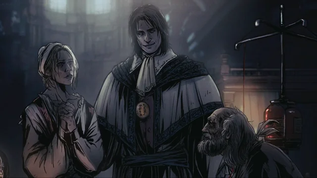
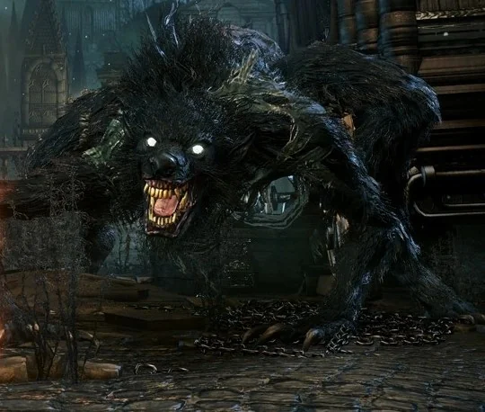
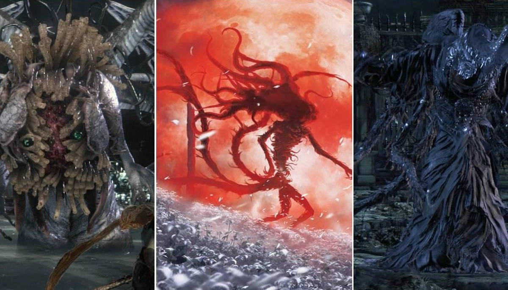
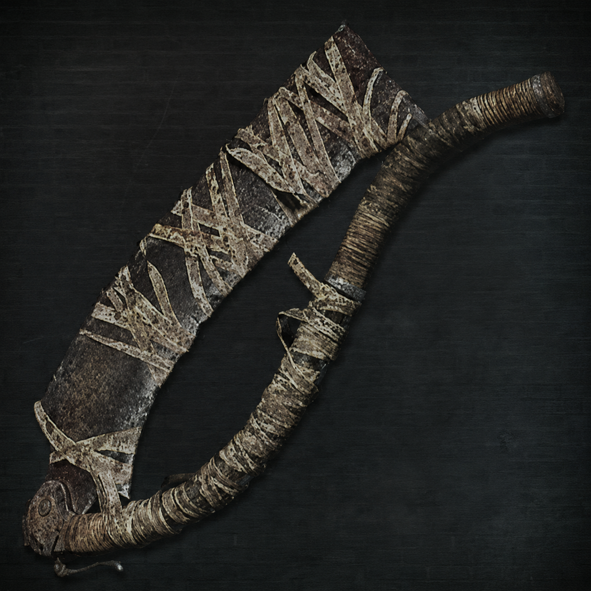
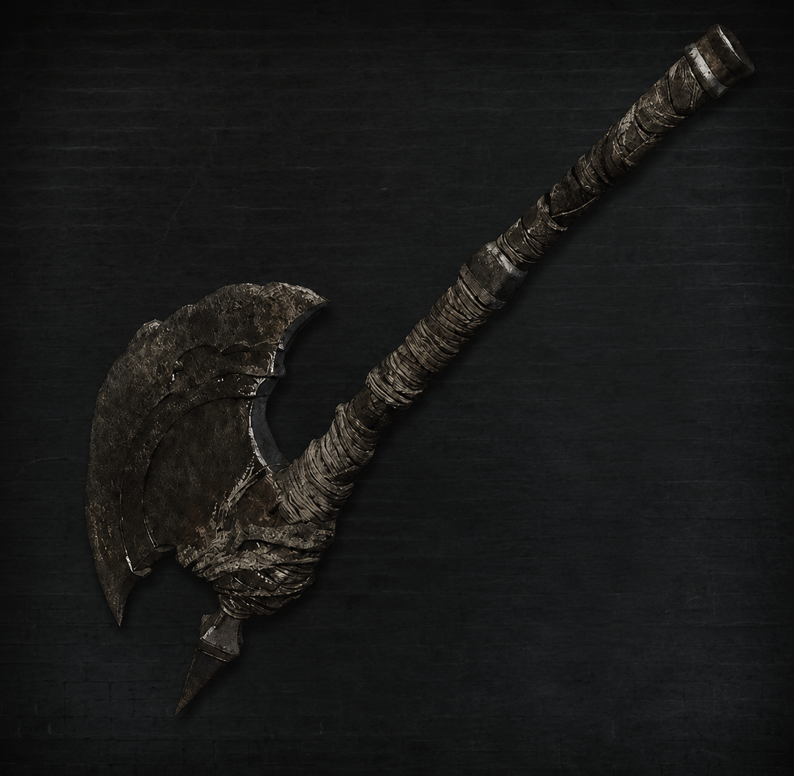
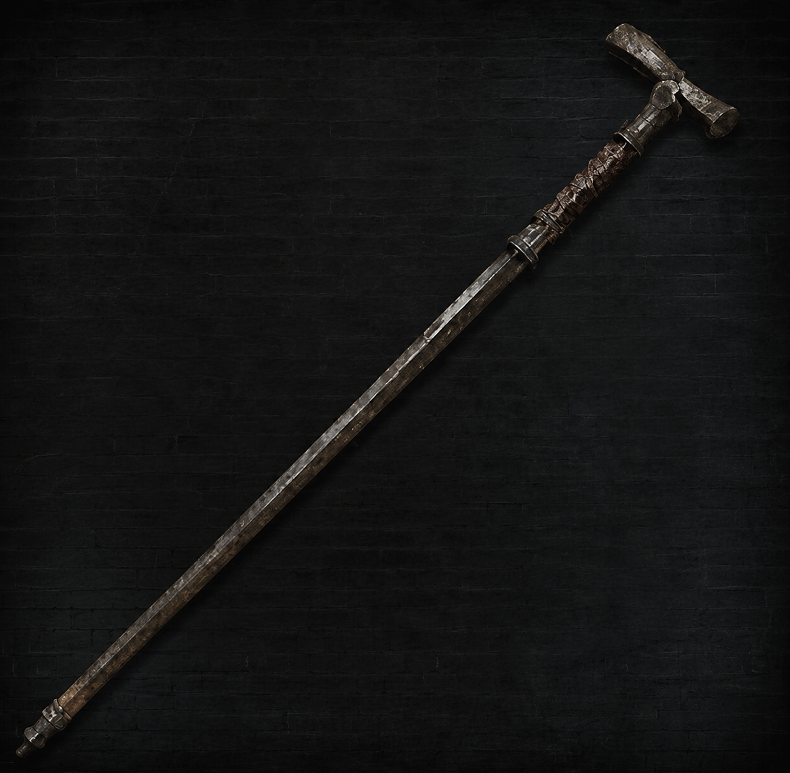
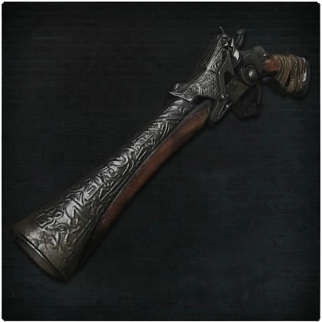
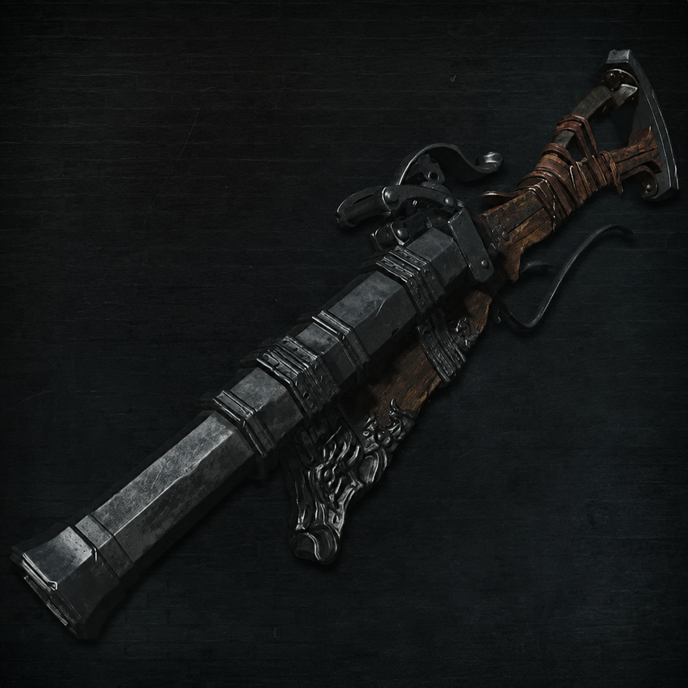

Os Mistérios da Lore: O Sangue Antigo
A história de Bloodborne não é contada de forma direta. Ela está escondida nas descrições de itens, cenários e diálogos enigmáticos. Para entender a queda de Yharnam, precisamos olhar para o passado.
A Igreja da Cura e o Sangue Milagroso
Tudo começou quando eruditos de Byrgenwerth descobriram um sangue antigo nas tumbas subterrâneas capaz de curar qualquer doença. Um homem chamado Laurence traiu seu mestre e fundou a Igreja da Cura, espalhando o consumo desse sangue por toda Yharnam, sem saber o preço terrível que cobraria.

A Praga das Feras
O sangue milagroso corrompeu os cidadãos. Gradualmente, aqueles que o consumiram começaram a se transformar em monstros peludos e criaturas gigantescas. Ironicamente, os membros de alto escalão da própria Igreja se tornaram as piores e mais grotescas feras de todas.

Os Grandes (Great Ones)
Por trás da praga, existem entidades cósmicas divinas conhecidas como os Grandes, que operam além da compreensão humana. O Sonho do Caçador no qual você está preso é, na verdade, a criação de uma dessas entidades: a misteriosa Presença da Lua.

Escolha sua Arma Inicial
No início do jogo, ao visitar o Sonho do Caçador pela primeira vez, você receberá o direito de escolher uma das três armas de truque criadas pela Oficina. Cada uma dita um estilo de jogo diferente:
-
Cutelo-Serra (Saw Cleaver): A arma mais icônica do jogo. Ela é equilibrada, rápida e causa dano extra do tipo Serrilhado, que destrói feras comuns muito mais rápido. É a escolha ideal para iniciantes. Também é possível aumentar seu alcance, utilizando seu modo aberto.

-
Machado de Caçador (Hunter Axe): Focado em força e controle de grupo. Quando transformado, ele se torna uma alabarda longa capaz de derrubar vários inimigos de uma vez com o seu famoso ataque carregado giratório. Claramente uma cópia descarada do machado de Gascoigne.

-
Bengala-Chicote (Threaded Cane): A opção mais elegante e ágil. No modo normal, funciona como uma espada rápida; no modo transformado, vira um chicote segmentado com longo alcance, ideal para caçadores focados em destreza (ninguém usa essa bosta).

-
Pistola de Caçador (Hunter Pistol): Focada em velocidade e precisão. Possui um disparo muito rápido e menor tempo de recuperação, sendo a escolha perfeita para caçadores com reflexos rápidos que buscam dominar o tempo do contra-ataque (parry) à distância.

-
Bacamarte de Caçador (Hunter Blunderbuss): Focado em impacto e segurança. Dispara uma dispersão de projéteis em cone que espalha o dano, tornando quase impossível errar o alvo de perto e garantindo o atordoamento dos inimigos mesmo se você errar o tempo exato do parry.

Atributos de Evolução (Status)
"Gaste seus Ecos de Sangue na Boneca do Sonho do Caçador para transcender a caçada humana."
| Atributo | Efeito no Personagem | Foco de Build (Armas) |
|---|---|---|
| Vitalidade | Aumenta os pontos de vida (HP) máximos do caçador. | Fundamental para todas as classes e sobrevivência geral. |
| Resistência | Aumenta a barra de estamina (energia para atacar/esquivar) e defesas físicas. | Essencial para manter a alta mobilidade e sequências de golpes. |
| Força | Aumenta o dano de armas pesadas e brutas da Oficina. | Machado de Caçador, Cutelo-Serra e Espada Sagrada de Ludwig. |
| Perícia | Aumenta o dano de armas ágeis e potencializa o dano do Ataque Visceral (crítico). | Bengala-Chicote, Lâminas da Misericórdia e Reiterpallasch. |
| Matiz de Sangue | Aumenta o poder destrutivo de armas de fogo e armas de dano de sangue. | Pistola de Caçador, Bacamarte e a katana Chikage. |
| Arcano | Aumenta o dano elemental (Fogo/Raio) e permite usar as Ferramentas de Caçador (magias). | Lâmina de Enterro, Roda de Logarius e magias dos Grandes. |
Os Grandes Desafios da Caçada
Para libertar Yharnam do pesadelo, você deve derrotar as maiores abominações da Igreja da Cura e as divindades cósmicas que regem este mundo:
Inscreva-se na Caçada
"Deixe seu nome nos registros de Yharnam para receber novos relatos sobre a lore, armas e chefes."